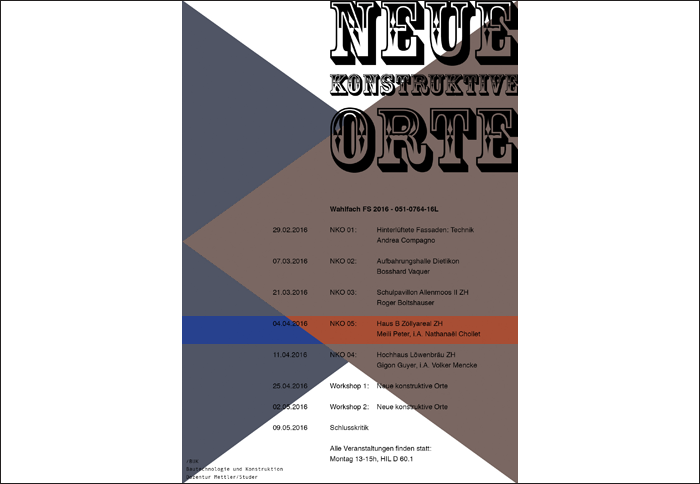

16.04.2016 VORTRAG / BUK BAUTECHNOLOGIE UND KONSTRUKTION ETHZ
In Vertretung des Architekturbüros Meili Peter Architekten präsentiert Nathanaël Chollet das Projekt Haus B, Zölly Areal (ZH). Thema des Vortrages: Keramik als Fassadenelement.
In Vertretung des Architekturbüros Meili Peter Architekten präsentiert Nathanaël Chollet das Projekt Haus B, Zölly Areal (ZH). Thema des Vortrages: Keramik als Fassadenelement.